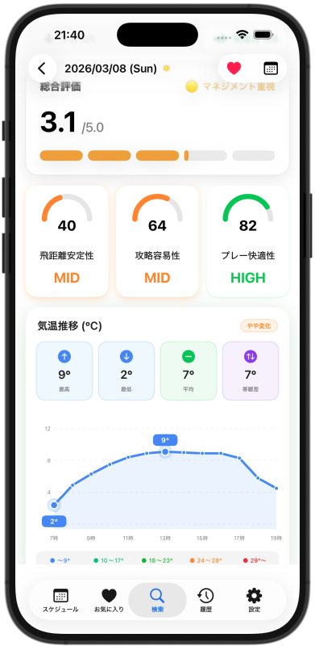

iOS App — Free Download
天気を読んで、
天気を読んで、
スコアを制す。
ゴルフ場の天気をリアルタイムで確認し、気温・風・湿度がスコアに与える影響を分析。次のラウンドを戦略的に準備しよう。


ゴルフ場の天気をリアルタイムで確認し、気温・風・湿度がスコアに与える影響を分析。次のラウンドを戦略的に準備しよう。
ゴルフ場ごとに気温・降水確率・風速・湿度を時間単位で確認。ラウンド前夜に翌日の天気を把握できます。
飛距離安定性・攻略容易性・プレー快適性の3指標で、天気がスコアに与える影響をひと目で把握できます。
よく行くコースをお気に入りに登録してワンタップアクセス。全国のゴルフ場を検索で素早く探せます。
ラウンド予定をアプリで管理。当日の天気予報をスケジュール画面でまとめて確認できます。
風向き・風速・湿度の時間推移を見やすいグラフで表示。プレー中の体感変化も先読みできます。
楽天GORAと連携した1,900以上のゴルフ場データベースから、目的のコースを素早く見つけられます。

風向き・気温・湿度の細かな変化が、ショットの結果を大きく左右します。Weather Golf は複数の気象データを統合し、あなたのプレーに合わせた天気情報を届けます。
スクロールしてスクリーンショットをご覧ください。情報がひと目でわかる、すっきりしたデザインを追求しています。



行きたいゴルフ場を検索するか、お気に入りに登録して素早くアクセス。
当日・翌日の気温・風・湿度をグラフで確認し、ラウンドに備えましょう。

気象影響スコアを参考に、クラブ選択やプレースタイルを事前に決めておこう。


楽天GORAとの連携で、全国のゴルフ場情報をアプリ内で簡単に検索。お気に入り登録でいつもよく行くコースへすぐアクセスできます。
ゴルフをもっと楽しくするアプリを個人開発しています。
Weather Golf、ゴルフ課題メモ など、シンプルで使いやすいツールをお届けします。